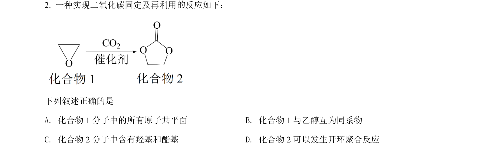
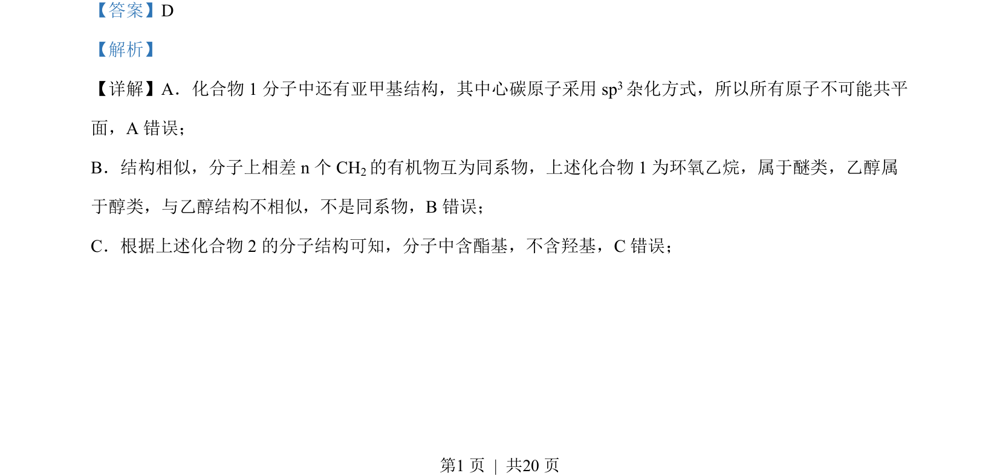
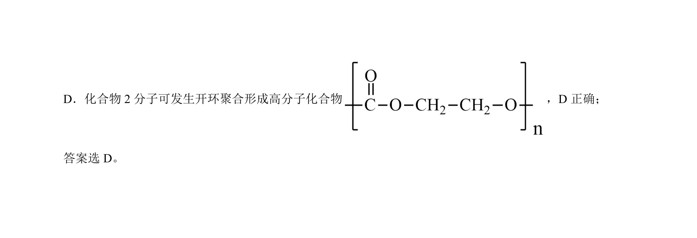

考点：sp3杂化 同系物 官能团 聚合反应

该题通过判断有机物结构、官能团与性质关系，考查同系物、杂化方式等基本概念。


📄 原 PDF 第 1 页：
素材/真题/吉林/2008-2024·（吉林）化学高考真题/2022年高考化学试卷（全国乙卷）（解析卷）.pdf
【答案】D 【解析】 【详解】A．化合物 1 分子中还有亚甲基结构，其中心碳原子采用 sp3杂化方式，所以所有原子不可能共平 面，A 错误； B．结构相似，分子上相差 n 个 CH2的有机物互为同系物，上述化合物 1 为环氧乙烷，属于醚类，乙醇属 于醇类，与乙醇结构不相似，不是同系物，B错误； C．根据上述化合物 2 的分子结构可知，分子中含酯基，不含羟基，C错误； 的